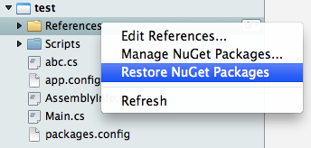
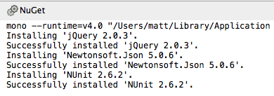

MonoDevelop NuGet Addin 0.6
New Features
- NuGet 2.7 support.
- Support for restoring NuGet packages.
- Added message to show that the Manage Packages dialog is searching for packages.
Restoring NuGet Packages
To restore NuGet packages for your solution, from the Solution window right click the solution, project or References, and select Restore NuGet Packages.

This will run NuGet.exe and uses the new restore argument that has been added to NuGet 2.7. The full command line will be similar to the following:
mono --runtime=v4.0 NuGet.exe restore YourSolution.sln
The output from this command will be shown in the NuGet output window. In the screenshot below you can see jQuery, Json.NET and NUnit being restored.

This feature assumes that your path environment variable includes the path to the mono runtime so the mono command line can be run without having to specify the full path.
Bug Fixes
Fixed rootnamespace not being replaced in source code transforms (.pp).
Download
The source code for the addin is available on GitHub.
The addin is also available to download from a custom MonoDevelop repository: